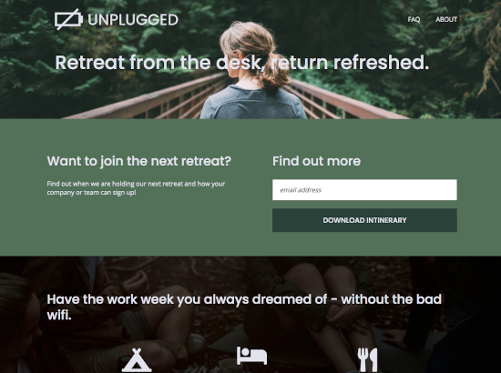
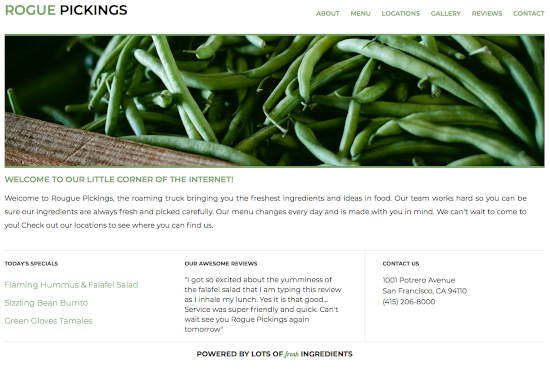
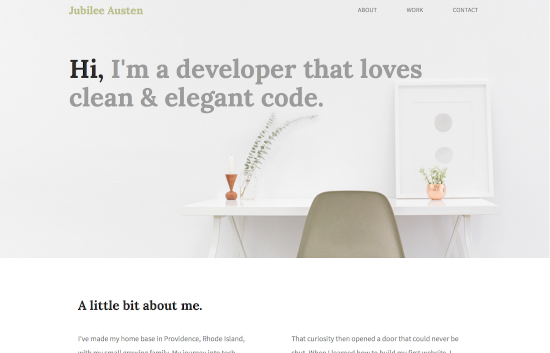
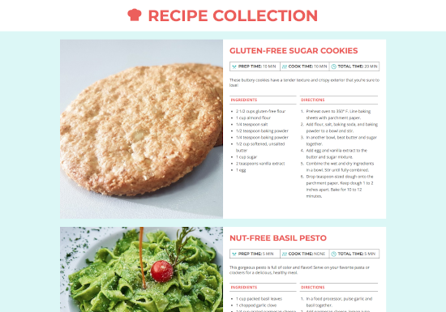
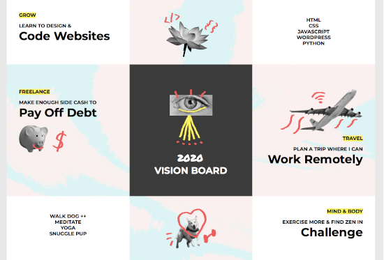
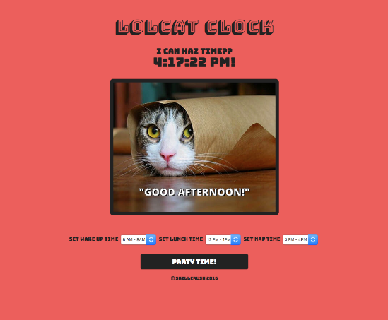
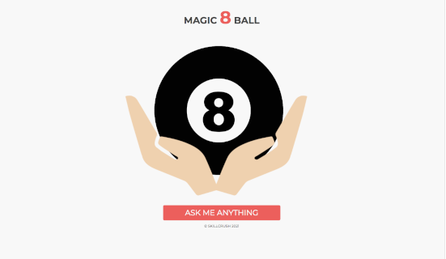

<tiny WEB DEV />
portfolio

Unplugged Project
HTML 5 & CSS developed from Photoshop Design Comp and HTML boilerplate v8.0
Multi-page responsive design for mobile, tablet, and desktop

Rogue Pickings Project
HTML 5 & CSS developed from Photoshop Design Comp
Single page, fixed size site with navigation, header image, and three column layout.

Jubilee Austen Project
HTML 5 and CSS Website
Multi-section, single page, fixed size site with navigation, header image, two column, and three column layout.

Recipe Collection Project
HTML 5 & CSS developed from Photoshop Design Comp
Single page, fixed size site containing sections for recipes.

Vision Planning Board
HTML 5 & CSS developed from Photoshop Design Comp
Single page, fixed size site containing grid layout for a vision planning board.

Lolcat Clock
HTML 5, CSS, and Javascript
Single page, fixed size site that uses Javascript for interaction and time display.

Magic 8 Ball
HTML 5, CSS, and Javascript
Single page, fixed size site that uses Javascript and JQuery for interaction and animation.